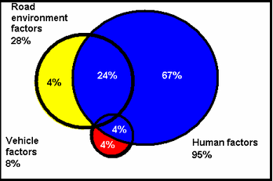

Человеческий фактор в безопасности транспорта
Ошибки людей -- основная причина аварий транспорта. Описаны способы, которыми уменьшают как число этих ошибок, так и их влияние на вопросы безопасности.
Ошибки людей в управлении транспортом -- основная причина аварий.
Основные исследования в области транспортной безопасности приводят к однозначному выводу, что основной причиной большинства аварий и катастроф на транспорте является человеческий фактор -- прежде всего, ошибки водителей и диспетчеров. Понятно, что ошибки проектирования и изготовления транспортных средств или элементов инфраструктуры тоже являются в конечном итоге ошибками людей, но ошибки водителей и диспетчеров являются ответственными за большинство фатальных случаев.
Для автотранспорта ошибки людей вносят свой вклад в 90 процентов всех несчастных случаев. При этом в 57 процентах происшествий человеческая ошибка является практически единственным фактором, который мог привести к аварии (http://www.ergogero.com/pages/roadaccidents.html). Лишь 2,4 процента несчастных случаев можно объяснить исключительно технической неисправностью, а неблагоприятная окружающая среда (то есть, явления, подобные гололедице) полностью ответственна за 4,7 процентов дорожных происшествий. Остальные 35,9 процентов автопроисшествий происходят в силу сложного сочетания различных факторов. Данные, собранные в отдельных странах, как правило, незначительно отличаются от этих среднемировых показателей.
Вот вклад отдельных факторов в аварии на автомобильных дорогах Австралии, 1996 г.:

Источник: Road Whys speeding module presenter's booklet
Regret is such a short distance.NSW Roads and Traffic Authority, 1996.
Для других видов транспорта вклад человеческого фактора в аварийность вполне сравним: в авиационном и водном транспорте человеческие ошибки управления порождают 70-80 процентов несчастных случаев, и только в железнодорожном -- около 50 процентов.
Налицо существенное различие в структуре причин аварий на различных видах транспорта. Почему в автомобильных перевозках человеческий фактор имеет почти тотальное влияние, в воздушных и водных -- решающее, но не исключительное, а в железнодорожных -- умеренное?
Для разных видов траспорта отличаются:
· Уровень подготовки лиц, управляющих транспортными средствами. Машинист тепловоза, пилот самолёта и человек, стоящий за штурвалом корабля, практически всегда превосходят среднего водителя автомобиля по уровню мастерства. К тому же те, кто управляет средствами воздушного, водного и железнодорожного транспорта, подвержены гораздо более строгому контролю.
· Уровень автоматизации, тем самым, просто возможность для человека совершить ошибку на разных видах транспорта отличается. Например, на железнодорожном транспорте отсутствует такое средство управления, как руль, следовательно, машинист физически не может сделать ошибку, вращая его, а такая ошибка очень часто допускается водителями автомобилей.
Во многих странах мира подростки и пенсионеры являются той группой водителей, которая попадает в аварии чаще, чем любая другая. Автомобильные происшествия -- это самая распространённая причина смерти среди американцев, не достигших 30 лет. В Великобритании для водителей в возрасте от 17 до 20 лет вероятность попасть в автопроисшествие с ранением человека в 6 раз выше, чем для водителя старше 40 лет. В США аналогичное соотношение ещё выше -- оно семикратное. При этом частота аварий коррелирует именно с возрастом, а не с водительским опытом, поскольку внутри групп водителей с одинаковым расстоянием, пройденным за рулём, все названные соотношения сохраняются. Основной причиной данного явления является рискованный стиль вождения, свойственный несовершеннолетним: в США около половины из них уже в течение первого года своей водительской карьеры задерживается полицией за нарушение правил дорожного движения. Самым распространённым видом нарушения при этом является превышение скорости. А вот пенсионеры просто не справляются с управлением.
Британский департамент транспорта ежегодно публикует статистический сборник о транспортных происшествиях, к которому прилагается справка ``Пятнадцать ключевых фактов о дорожной безопасности''. Среди этих пятнадцати фактов в 1999-2000 годах были названы, в частности, такие:
· 42 процента смертельных случаев происходит в тёмное время суток, несмотря на минимальный транспортный поток;
· Превышение скорости является главным фактором или одним из повлиявших факторов в каждой третьей аварии. Каждый 1 процент уменьшения средней скорости движения сокращает смертельные случаи на 7 процентов;
15 процентов всех смертей на дорогах связаны с алкоголем. В большинстве стран мира принимаются очень жесткие меры по борьбе с этим социальным явлением - но приходится признать, что эти меры практически не работают: общество защищает своих алкоголиков.
В США известен прецедент, когда пилот, уволенный из авиации за алкоголизм, был восстановлен на работу по суду: он вовремя запасся документами о прохождении курса лечения.
Остается непонятным, как склонность человека "пропустить рюмочку" не попадает в поле зрения страховых компаний. Страховка начинающих водителей ведь стоит дороже, нежели водителей опытных. Так и страховка любителей выпить должна стоить дороже. Фактически, существующее регулирование страхового рынка, которое не позволяет страховым компаниям быть эдакими "маленькими полицейскими агенствами" для своих клиентов, заключивших с ними договоры страхования, во многом поощряет такую практику слегка пьяного человеческого фактора. Ведь не секрет, что и на авиации попадаются не совсем трезвые пилоты.
Уровень профессиональной готовности участников движения
Можно выделить общий и текущий уровень профессиональной водительской готовности человека, управляющего транспортным средством. Текущий уровень -- это способность водителя или пилота избежать чрезвычайного происшествия в данный момент времени. Общий уровень можно определять как средний уровень на протяжении водительской карьеры.
Различия в уровне профессиональной готовности разных групп лиц, управляющих транспортными средствами, можно на основании статистических данных. В то время, как сравнивать рядовых автолюбителей с пилотами ``Боингов'' затруднительно, сопоставление водителей-профессионалов и обычных водителей позволяет сделать однозначные выводы.
В Великобритании показатель смертей от несчастных случаев на 100 миллионов миль пробега для легковых автомобилей в 2,8 раза выше, чем для лёгких грузовиков и в 14 раз выше, чем для автобусов. (См. Road Accidents Great Britain 1999: DETR (2000))
С другой стороны, в США тяжёлые грузовики, составляя 2 процента в автомобильном парке страны, участвуют в 12 процентах фатальных происшествий. (См. Громов Г.Р. Американские автодороги: статистика фатальных автопроисшествий, http://www.prompolit.ru/86573). Однако никаких выводов из этих данных сделать нельзя, поскольку очевидно, что доля тяжёлых грузовиков в суммарном автопробеге американских автомобилей значительно превышает 2 процента и, вероятно, составляет свыше 12 процентов (автомобили, в которых люди ездят на работу в течение всего рабочего дня обычно припаркованы, тогда как грузовики разъезжают по дорогам постоянно). О манипулировании статистическими данными см. также http://www.prompolit.ru/107113
Очевидно, что факторы позволяющие автомобильным водителям-профессионалам ездить более безопасно по сравнению с рядовыми водителями действуют и на профессионалов, управляющих другими видами транспорта: пилотов, машинистов, штурманов и т.д. Можно перечислить основные из этих факторов:
· значительный опыт;
· естественные способности: очевидно, профессия, требующая управления транспортным средством, часто выбирается людьми, от природы наделёнными преимуществами в реакции, зрении, внимательности и т. д.;
· более долгое обучение и более стандарты обучения;
· контроль со стороны работодателей, ассоциаций потребителей, владельцев транспортной инфраструктуры и пр. (вплоть до невозможности более устроиться на работу, ежели допущено хотя бы одно серьезное нарушение);
· контроль со стороны государственных органов.
Действие последнего фактора представляется избыточным, поскольку все необходимые требования уже выработаны непосредственно заинтересованными лицами (работодателями, потребителями и т.д.). Тем не менее, они могут быть уместны, если государство выступает как собственник инфраструктуры или учебного заведения, готовящего транспортных специалистов.
Важно отметить, что устанавливаемый государством уровень знаний и умений по допуску к управлению теми или иными транспортными средствами абсолютно произволен и никак не связан с какой-то объективацией. Для профессионального транспорта, правда, регулярно проводятся исследования по влиянию установленных стандартов подготовки специалистов на уровень безопасности - но и сам уровень безопасности тоже произвольно устанавливается.
Федеральная администрация по авиации США (FAA) имеет целое подразделение Human Factors ("человеческие факторы"), которое "научно" устанавливает "объективные" стандарты подготовки персонала. Но эти стандарты подготовки вынуждены быть усредненными для всех, в то время как реальные опасности преодолеваются конкретными людьми в конкретных ситуациях. Все эти "объективные" стандарты рассчитаны не только на усредненного пилота, которого и не встретишь за штурвалом, но и на определенный средний уровень безопасности пилотирования, ожидаемый от них - уровень, в свою очередь установленный произвольно административно, а не объективированно рынком.
Для "любительских" видов транспорта (прежде всего - автомобили) барьеры устанавливаются "политически", в результате общественного торга между чиновниками, ответственными за безопасность и гражданскими активистами, борющимися за "свободный доступ к средствам передвижения".
Единственным способом преодолеть это противоречие является переход от административной ответственности, установленной на произвольной планке, к контрактным методам - прежде всего, страхованию ответственности. Тогда приемлемый уровень подготовки специалистов транспорта определит рынок: худшие водители, пилоты и капитаны просто не смогут заплатить сумму страховок, требуемую для выхода на трассу.
Факторы опыта и естественных способностей не могут влиять на массу рядовых водителей даже теоретически. Три последних фактора, наоборот, в принципе подконтрольны тем или иным субъектам в обществе. Однако, поскольку факторы, неподконтрольные общественности, всё-таки существуют, ни государство, ни частный бизнес, ни некоммерческие ассоциации никогда не смогут полностью нивелировать разницу в мастерстве между профессиональными водителями и любителями.
Значит ли это, что те, кто управляет самолётами и кораблями всегда в среднем будут более квалифицированными, чем водители автомобилей? Правильный ответ -- отрицательный. Дело в том, что по мере экономического роста в мире любительская авиация и любительское судовождение становятся всё более популярными. Следовательно, эти виды транспорта, по степени влияния человеческого фактора на безопасность, будут постепенно приближаться к автомобильному.
Поэтому единственный выход в повышении безопасности при смягчении доступа людей к управлению транспортными средствами - это автоматизация управления, позволяющая технике предотвращать столкновения и другие аварии.
Замена человека автоматами
Под ``уровнем автоматизации'' в данном случае имеются ввиду не количество и сложность автоматических систем как таковых, а доля решений, принимаемых автоматами вместо людей, управляющих транспортными средствами. Наибольшие возможности в автоматизации процесса принятия решений предоставляют, естественно, различные виды рельсового транспорта.
В СССР первая автономная САВП -- система автоведения поезда (так называемый ``автомашинист'') была создана ещё в 1957 году. Но полная автоматизация управления поездом впервые была внедрена на рубеже 1980-х и 1990-х годов во Франции, в метрополитене города Лилль. Система автоведения поездов лилльского метро управляет всем процессом движения -- от пуска до полной остановки. Различают автономные и централизованные системы автоведения поездов, причём первые управляют только одним поездом, а вторые -- всеми поездами на линии метрополитена или железнодорожном направлении. Централизованные САВП применяются первую очередь на пригородных и городских железных дорогах. Примером может служить система ``ВАРТ'', применяемая в США.
Существуют фундаментальные особенности различных видов транспорта, которые в краткосрочном и среднесрочном пределе ограничивают возможность автоматизации тех или иных операций по управлению транспортными средствами. Мыслимые ситуации, в которые может попасть, скажем, автомобиль, на много порядков превосходят аналогичный диапазон возможностей поезда метро, который полностью изолирован от влияния погоды, от возможного желания водителя изменить направление движения, от риска столкновения со встречным или желающим совершить обгон транспортным средством и т.д. Тем не менее, развитие вычислительной, навигационной и комменикационной (для связи транспортных средств между собой) техники способно в обозримом будущем обеспечить тотальную автоматизацию и других видов транспорта. Единственное касающееся транспорта решение, которое человек никогда не сможет переложить на автоматику, это решение о том, что, откуда и куда должно быть перевезено (и то для грузового транспорта автоматизация логистики решает именно эту задачу).
Разработка автоматических систем, управляющих транспортными средствами и принимающих решения об оптимальных способах избежать опасность, в 1990-е годы развивалась очень быстрыми темпами. Например, уже существуют автомобили с бортовым компьютером, способным идентифицировать различные объекты на трассе, оценивать их скорость, координаты и другие базовые характеристики. Естественно, что это позволило разработать программы, рассчитывающие риск столкновения или другого происшествия, и на основании данных расчётов предлагающие водителю принять то или иное решение.
Средства обеспечения безопасности могут работать не только на высоких скоростях и обеспечивать эффективное торможение. Большое количество мелких автопроисшествий происходит при практически нулевой скорости движения -- на парковках. С сентября 2003г. Toyota для гибридного автомобиля Prius начинает поставку опциональной системы автоматической парковки, стоимостью в $2500. Водитель может вообще не держать руль, парковочная автоматика сама "втиснет" машину на место. Видеокамера на заднем бампере обеспечивает считывание как стояночной разметки, так и препятствий -- и точно управляет маневрами автомобиля.
Несомненно, подобные программные средства во многих случаях облегчают управление автомобилем и снижают вероятность несчастных случаев. Однако пока водитель принимает все решения сам, они не могут гарантировать снижение аварийности. Любой совет, который даёт компьютерная программа, может быть отклонён; если водитель не хочет передать управление автопилоту, ничто не заставит его сделать это.
Поскольку водители в таких ситуациях действительно иногда совершают ошибки, из-за чего регулярно погибают люди, у многих специалистов возникла идея разработать такие средства автоматического управления машиной, которые в случае критической опасности аварии, не ограничивались бы предупреждением и советом, как избежать опасности, а перехватывали бы управление и, независимо от желания человека, сидящего за рулём, совершали бы необходимые действия.
Создание таких систем ставит в центр общественного внимания вопрос о необходимости их повсеместного применения. Ясно, что кто-то захочет ими пользоваться, а кто-то не захочет. Вправе ли государство, местные власти или другие органы навязывать автопроизводителям и автовладельцам обязательное использование подобных систем? Если мы отвечаем ``да'', возникает второй вопрос: а следует ли поступать таким образов, улучшится ли от этого баланс безопасности и эффективности в транспортных потоках?
В принципе, должно быть признано естественным и очевидным, что владелец автомобильной дороги вправе не допускать на свою дорогу транспорт, который кажется ему чрезмерно опасным. Либо допускать его, но на дискриминационных условиях. Однако последовательное применение этого принципа должно означать, что на государственных дорогах необходимые стандарты безопасности устанавливает государство, на муниципальных -- муниципалитет, а на частных -- частный владелец.
Что касается эффективности данной меры, то возникает по меньшей мере одно существенное обстоятельство, которое её снижает. Автомобиль, управляемый только автопилотом, или машина, находящаяся под полным и постоянным контролем живого водителя может ездить с достаточно большой безопасностью. Но если контроль периодически переходит то от автомата к человеку, то от человека к автомату, опасность существенно возрастает. Очень многое зависит от того, при каком уровне опасности контроль над автомобилем будет переходить от человека к компьютеру.
Если автоматическая система будет ``перестраховываться'', перехватывая управление ещё до того как риск станет действительно серьёзным, то такие перехваты придётся производить довольно часто, зачастую в ситуациях, с точки зрения водителя совершенно простых и безопасных. Естественно, каждое повторение такой коллизии будет вызывать у водителя раздражение и психологический дискомфорт, что само по себе для человека, управляющего транспортным средством, категорически нежелательно.
Если же, наоборот, перехват контроля автоматической системой производится в самый последний момент, может оказаться, что уже поздно. Определить момент и критерии такого перехвата -- исключительно сложная задача. Ведь свести ``опасность'' дорожной ситуации к какому-то одномерному измерителю, по достижении критического значения которого контроль переходит к автопилоту без упрощения и игнорирования деталей, строго говоря, невозможно. Не исключено, что системы, созданные разными разработчиками, будут использовать разные критерии. Приведение их ``к общему знаменателю'' является дополнительной трудностью, впрочем, эта трудность общая для всех видов технического регулирования.
Наконец, важным обстоятельством является следующее: если автоматическая система перехватила контроль за машиной у живого водителя, а авария тем не менее случилась, ответственность неочевидным образом возлагается на водителя. Она может лечь на компанию, разработавшую программу автоматического управления, либо на фирму, изготовившую автомобиль, либо на орган, сертифицировавший данную версию автопилота. Или все-таки на собственника автомобиля, рискнувшего поставить себе на автомобиль именно эту систему, а не какую-либо другую. Или на водителя, рискнувшего все-таки сесть на автомобиль, не проверив его надежность.
В разных странах мира суды решают этот вопрос по-разному. По мере отхода от принципов контрактного права (caveat emptor - "покупатель пусть будет осторожен"), где вся ответственность возлагается на конечного пользователя отказавшей системы, вступают в действие принципы tort law, где все чаще и чаще даже явные ошибки водителей выдаются за неисправности или недостатки технических средств.
Так, один из классических примеров такого суждения - выезд водителем в США в 1990г. на встречную полосу, в результате чего водитель погиб. Родственники вытребовали с компании Honda, производителя автомобиля, огромные штрафы и денежные компенсации, ибо его гибель можно было предотвратить бы, ежели машина была бы оборудована air bag. И это несмотря на то, что водитель безусловно был виноват в том, что выехал на встречную полосу, и безусловно знал в момент покупки о том, что автомобиль не был оборудован air bag. К тому же тогда оборудование машин air bag было отнюдь еще не общей практикой.
Современная судебная система США все чаще и чаще делает такого сорта "сдвиг ответственности" с потребителя на какую-нибудь корпорацию, поставившую участвовавшее в аварии оборудование или элементы инфраструктуры. Европейская судебная система медленно, но верно начинает двигаться в этом же направлении.
В результате такого сдвига от контрактного к гражданскому праву:
· Производящие компании начинают производить тестирование своих систем обеспечения безопасности до такого уровня, что их разработка и производство становятся чрезвычайно дорогими.
Самоходное инвалидное кресло iBot изобретателя Дина Кеймена обойдется покупателям в $20 000, а разрабатывалось оно много лет. Во многом эта высокая цена и большие задержки с выпуском были связаны с тем, что это кресло прошло все мыслимые и немыслимые тесты, что явно указывают комментарии разработчиков. И дело тут даже не в сертификации. Компания Johnson and Johnson просто может понести очень большие убытки, ежели даже в результате собственной неосторожности кресло причинит увечья каким-нибудь инвалидам (http://www.msnbc.com/news/285231.asp). Ведь были случаи, когда дела в суде выигрывались пользователями транспортных средств, допустивших явные просчеты, и доказывавших, что инструкции были написаны недостаточно внятно.
· Резко вырастает цена страховки на транспорте - ибо заранее неизвестно, какую сумму и кто получит (известно только, что в США в среднем 25% этой суммы пойдут юристам).
Если обязательное использование подобной системы станет всеобщей нормой, то автопроисшествия или исчезнут навсегда (если автопилоты будут работать идеально), или будут происходить так, что на водителе ни в коем случае не будет лежать ответственности. А такая ситуация зачастую порождает ``моральные риски'': нетрудно представить водителя, который, будучи уверен в эффективности автоматической системы по предотвращению аварий, и зная, что даже при крайне неблагоприятном развитии событий его никто ни в чём не обвинит, ведёт себя за рулём нарочито рискованно. ``Мне -- адреналин, а думать и отвечать -- компьютеру''. Правда, за такое поведение водителю придется очень дорого заплатить: соответствющие системы безопасности будут стоить очень дорого (цена страховки ведь никуда не исчезнет - просто страховку такой водитель будет покупать не самостоятельно, а цена ее войдет в стоимость оборудования. Страхователем же будет компания-производитель оборудования, которая будет страховать свои возможные судебные издержки).
В целом такое развитие событий, когда безответственность водителей перекладывается тяжким бременем на производителей транспортных средств, называется liability crisis.
Из-за практики перекладывания ответственности с пилотов на производителей малых самолетов, в США был принят специальный закон, во многом запрещающий такую практику (General Aviation Revitalization Act, 1994). Это было сделано только потому, что выпускать легкие самолеты стало невыгодно: что бы ни вытворяли пилоты, за все должны были платить производители, а если в стоимость самолета де-факто включалась стоимость страховки, то такие самолеты никто не покупал из-за их дороговизны. Cessna и Piper просто перестали выпускать такие самолеты. Только после выхода этого закона, ограничивающего срок претензий к производителям 18 годами и вводящими еще кое-какие для них послабления, легкие самолеты начали выпускаться вновь.
Тем самым развитие новых средств безопасности на транспорте зависит в том числе и от того, насколько успешно будет проходить реформа гражданского права (tort law) в развитых странах, в которых подобного сорта высокие технологии появляются в первую очередь. Не исключен вариант, при котором новые технологии обеспечения безопасности никогда не появятся в силу того, что новые более безопасные транспортные средства будут стоить непропорционально больше старых более опасных - именно в силу того, что суды будут игнорировать действительную роль человеческого фактора при вождении и перекладывать риски на производителей средств безопасности.
Социальные меры
Суть социальных мер в том, чтобы воздействовать не на физические характеристики транспортных средств и инфраструктуры, а на поведение людей, которые всеми этими техническими объектами управляют. Социальные меры очень разнообразны.
Главным таким средством воздействия на поведение участников движения выступает юридическая ответственность. Человек, который при управлении транспортным средством стал виновником несчастного случая или хотя бы предпосылки для подобного происшествия создал, может быть наказан по всей строгости закона. Его ответственность может быть административной (лишение водительских прав или лицензии, штраф, обязанность выслушать лекцию о правилах движения), гражданской (возмещение причинённого материального и морального ущерба), а в особо тяжёлых случаях и уголовной (лишение свободы, конфискация имущества).
Чтобы гарантировать исполнение гражданской ответственности, применяется обязательное ее страхование, а сумма страховой премии зависит от предыдущего поведения участника движения и попадания его в одну из групп риска. То есть попадать в аварии становится очень накладно - и это дисциплинирует. Также эта мера позволяет ограничивать доступ к транспортной инфраструктуре для тех людей, которые, в случае причинения кому-либо вреда, с высокой вероятностью не смогли или не захотели бы возмещать нанесённый вред.
Как правило, на транспорте используется сертификация лиц, управляющих транспортными средствами (необходимость сдать и регулярно пересдавать экзамены, проходить специальную подготовку на тренажёрах). Активно проходит гармонизация подобной системы в мире.
Европейский профессиональный водитель сейчас получает права, официально действительные на всей территории Европы.
Пропаганда. В экономически развитых странах, также как и в России, широко распространены плакаты, лозунги, видеоролики и другие пропагандистские материалы, призывающие всех, кто пользуется транспортной инфраструктурой и средствами транспорта, быть более осторожными и придавать безопасности больше внимания
Раскрытие информации. Речь идет не только о точной статистической информации о транспортных происшествиях, которая в большинстве стран легко доступна и распространяется достаточно широко вместе с ее интерпретацией, побуждающей граждан выбирать менее рискованные способы перемещения.
Речь идет и о прямом раскрытии информации о поведении водителей транспортных средств - сейчас это весьма сложно, ибо по номеру машины "вычислить" ее владельцев могут только представители властей, и только они же могут осуществлять в связи с этим контроль за поведением на дорогах.
Сейчас европейские страны вынашивают планы снабжения каждого автомобиля бесконтактным идентификационным чипом, который позволит отслеживать перемещения автомобиля на предмет их соответствия правилам движения (на обочинах дорог планируется разместить огромное количество датчиков, фиксирующих превышения скорости, проезд на красный свет, парковки в неположенном месте и т.д.).
Раскрытие информации прямо конфликтует с желанием граждан обеспечивать прайвеси - тайну своих перемещений и действий. Фактически, избыточное раскрытие информации и автоматизация слежки ведет получению властями дополнительного контроля за гражданами. И речь идет не только о контроле властей - но обеспечении взаимоконтроля.
В США получила распространение практика, когда родители, чьи дети только начинают водить автомобиль, вешают на бампер этого автомобиля табличку с номером своего телефона, чтобы другие водители, пешеходы и полицейские могли позвонить по этому телефону и сообщить родителям, что их ребёнок водит машину с похвальной аккуратностью или, наоборот, с предосудительной небрежностью.
Палитра социальных мер по обеспечению транспортной безопасности постоянно расширяется, но простое ужесточение законодательства, определяющее правила дорожного движения, минимизирующие риск до уровня ниже, чем общественно приемлемый, оказывается неприемлемым (этот феномен на примере "серых" зон превышения скорости подробно разобран в http://www.prompolit.ru/86573). Такое законодательство де-факто приводит к возможности произвола со стороны властей, что крайне неправильно.
Наиболее перспективное направление в развитии подобных мер -- это поиск оптимальных форм добровольных контрактов, связанных с транспортными перевозками, их страхованием и добровольно выбираемым распределением ответственности.